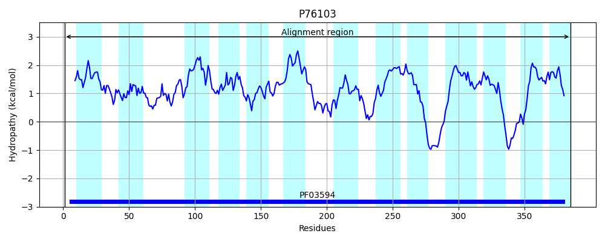
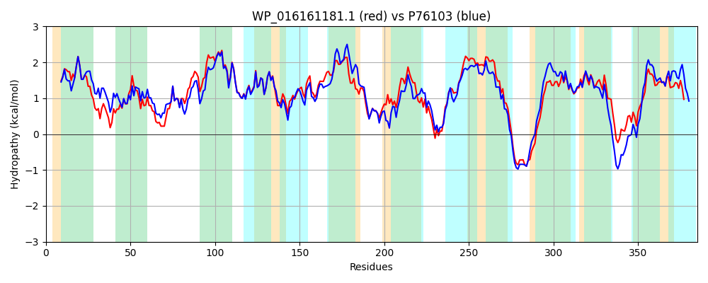

Hit Accession: P76103
Hit TCID: 2.A.46.1.9
Hit Description: gnl|BL_ORD_ID|11435 gnl|TC-DB|P76103|2.A.46.1.9 Inner membrane protein YdcO OS=Escherichia coli (strain K12) GN=ydcO PE=1 SV=2
Mach Len: 385
e:0.000000
Query TMS Count : 10
Hit TMS Count: 13
TMS-Overlap Score: 9.650000
Predicted Substrates:CHEBI:16150;benzoate
BLAST Alignment:
Score: 1371 , Bit scores: 532 bits, E-value: 0.0e+00, Alignment length: 385, Percentage identity: 70
Query: 1 MRSFTLPLPTLLAGFVAVLVGYASSAAIIWQAAASAGATPGQIAGWMTALGLAMGISTLALSGWRKVPVLTAWSTPGAALLVSGLQGVTLAEAVGVFIFANALIVLCGVTGLFARLMKIIPHSLAAAMLAGILLRFGLQAFAGLQDHLLLCGGMLAAWLLCKALWPRFAVVAALVVGALIAAASGDVARTAVPLAFAAPEWIAPQFTPALLLSVGLPFFLVTMASQNAPGFATLQASGYTVPVSALLVACGGLALLLAPFGVYSICIAAITAAICQSPEAHPDPQQRWLAAMAAGGFYLLAGLFGGSITALMSALPAAWIQMLAGLALLGTIGGSLFQAVHQASERDAAVLTFLVTASGVTLAGIGSAFWGVVLGGVSYGVLSAL 385
MR F++P PTLLAGF+AVL+GYASSAAIIWQAA AGAT QI+GWMTALGLAMG+STL L+ W +VPVLTAWSTPGAALLV+GLQG+TL EA+GVFI NALIVLCG+TGLFARLM+IIPHSLAAAMLAGILLRFGLQAFA L LCG ML WL KA+ PR+AV+AA+++G +I A GDV T V P +I P F+ A LSV LP FLVTMASQNAPG A ++A+GY+ PVS L+V G LAL+ +PFGVYS+ IAAITAAICQSPEAHPD QRWLAA AG FYLLAGLFG +IT +M+ALP +WIQMLAGLALL TIGGSL+QA+H ERDAAV+ FLVTASG+TL GIGSAFWG++ GGV Y VL+ +
Sbjct: 1 MRLFSIPPPTLLAGFLAVLIGYASSAAIIWQAAIVAGATTAQISGWMTALGLAMGVSTLTLTLWYRVPVLTAWSTPGAALLVTGLQGLTLNEAIGVFIVTNALIVLCGITGLFARLMRIIPHSLAAAMLAGILLRFGLQAFASLDGQFTLCGSMLLVWLATKAVAPRYAVIAAMIIGIVIVIAQGDVVTTDVVFKPVLPTYITPDFSFAHSLSVALPLFLVTMASQNAPGIAAMKAAGYSAPVSPLIVFTGLLALVFSPFGVYSVGIAAITAAICQSPEAHPDKDQRWLAAAVAGIFYLLAGLFGSAITGMMAALPVSWIQMLAGLALLSTIGGSLYQALHNERERDAAVVAFLVTASGLTLVGIGSAFWGLIAGGVCYVVLNLI 385 | Protein Hydropathy Plots: |
|---|
 |  |
Pairwise Alignment-Hydropathy Plot:
|
|---|
|  |